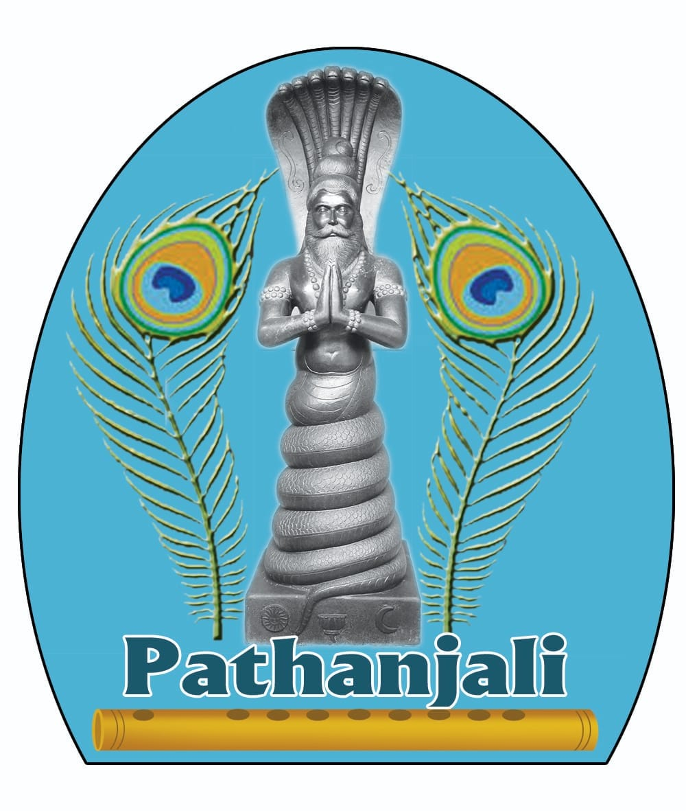

Pathanjali Flute Academy
~ Learn Carnatic Flute - Online, At Your Convenience ~
"Music is the shortcut to the Divine."

"Music is the shortcut to the Divine."
Pathanjali Flute Academy is dedicated to the teaching and preservation of the Carnatic flute—known as the Venu, or Pullankuzhal—in the living classical tradition. Founded and guided by Vidwan Sri Chittoor K. Pathanjali, the academy brings the authentic guru-shishya parampara to students across the world through the ease of online learning.
Instrument Requirement: Students are advised to procure a Carnatic bamboo flute in the 'G' scale, which is the standard starting instrument.
Sri Chittoor K. Pathanjali is an accomplished Carnatic flute vidwan hailing from an illustrious lineage of eminent musicians. He was initiated into the nuances of woodwind music at a very young age by his grandfather, the legendary violin maestro and Mahaguru Kalaimamani Sri Chittoor Gopalakrishnan, whose guidance laid a firm foundation in manodharma and classical aesthetics. He further imbibed rich musical values and sustained training from his father, Sri Chittoor G. Kumaresan, an accredited and accomplished violin and viola artist.
Reflecting his deep scholarship and aesthetic excellence, Sri Pathanjali is an Asthana Vidwan of Sri Kanchi Kamakoti Peetam, which is among the highest recognitions in Carnatic music. He is a recipient of the CCRT (Centre for Cultural Resources and Training) Scholarship from the Government of India, New Delhi, and has been honoured by the Government of Tamil Nadu for his contributions to Carnatic music.
A seasoned performer, he has rendered concerts on prestigious platforms including All India Radio and Doordarshan, and has served as a part-time faculty member at the Department of Music, University of Madras. He has represented Carnatic flute music on international platforms through concert tours in the USA, Canada, Mexico, and the UAE, where his music has been warmly received by connoisseurs.
As a prolific composer and vageyakara, he is best known for the celebrated "Kamakshi Nava Ragamalika," a work appreciated for its rare command over raga lakshana, lyrical depth, and aesthetic refinement. As a dedicated guru, he mentors over 100 students, many of whom are active performers today.